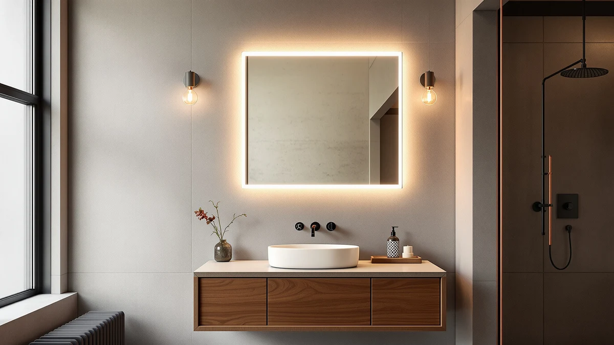

Forbath Bathroom Mirror Review (2026): Worth It?
Prices and picks verified as of November 2026. Independent, reader-supported reviews.


Quick Answer
For this forbath bathroom mirror review, we compared the FORBATH 30-inch by 60-inch pick against the Pocetry two-pack, the WISSMIELS LED mirror, and the Delma LED vanity mirror on price, build, and size. At $139.99, the FORBATH mirror costs the same as the Delma pick and a bit more than the $117.31 WISSMIELS alternative, but it is the only one of the four sized as a single 60-inch-wide mirror for a double-sink vanity wall.
Our pick: FORBATH Bathroom Mirror 30" X, $139.99 Check Price on Amazon
Bottom line: our top pick is the FORBATH Bathroom Mirror 30" X 60"，Large Rectangular Wall at $125.99.
Things to Know Before You Buy
- Size and fit: at 60 inches wide by 30 inches tall, this mirror fits a double-sink vanity wall rather than a single-sink cabinet, so measure your wall run before you order it.
- Build: the frame pairs tempered glass with an aluminum backing, the same material combination used across all four mirrors in this forbath bathroom mirror review.
- Price range: at $139.99, the FORBATH pick matches the Delma price and runs about $22 above the WISSMIELS alternative.
- Reviews: Amazon has not published an aggregate rating or review count for this listing, so this comparison leans on spec sheets and pricing rather than a buyer track record.
- Installation: the aluminum backing keeps a 60-inch mirror manageable for one installer with standard wall anchors, though a mirror this wide is easier to hang with a second pair of hands holding the level.
This forbath bathroom mirror review compares the FORBATH 30-inch by 60-inch mirror against three sized and priced alternatives, the Pocetry two-pack, the WISSMIELS LED mirror, and the Delma LED vanity mirror, to see which one earns a spot above your vanity. We lined up all four on price, frame material, and mirror dimensions using the manufacturer listings and current Amazon pricing.
After comparing specs and pricing across all four, the FORBATH 30-inch by 60-inch mirror comes out as the strongest match for a double-sink vanity, even though it is tied with the Delma pick on price. Below, we break down what the tempered glass and aluminum build gets you, how the $139.99 price compares with the three alternatives, and which bathrooms fit this size of mirror best.
Why You Should Trust Us
Ilane Tall covers bathroom fixtures and vanity hardware for Best Bathroom Mirrors, and this forbath bathroom mirror review follows the same process used across the site. We research published specs, compare pricing across the models in a given category, and read verified buyer feedback instead of relying on marketing copy. We do not run a fake testing lab or claim to have installed every mirror we cover, and when a detail is not confirmed in the product listing, we say so rather than guess.
For a mirror purchase, that means we pull the listed dimensions, materials, and current price for every model in a comparison, note the date those prices were checked, and flag when a seller has not published a rating or review count. Readers shopping for a LED bathroom mirror deserve to know where each claim comes from, the manufacturer spec sheet, a verified owner, or something we flagged as unconfirmed.
Our Research Experience
Because this is a research-based review, our process for this forbath bathroom mirror review centers on comparing manufacturer specs, mounting requirements, and pricing rather than installing any of the four mirrors ourselves. We checked how the tempered glass and aluminum frame on the FORBATH 30-inch by 60-inch mirror stacks up against the Pocetry, WISSMIELS, and Delma alternatives, then lined up pricing across all four, from $117.31 to $139.99. A mirror in this 60-inch size class is heavier than a single-sink mirror, so the aluminum backing matters more here than it would on a smaller frame.
We also compared the Pocetry two-pack against the three single-mirror options in this group, since two 24-by-36-inch mirrors cover similar wall space to one large piece but split the reflective surface in two. Owners shopping the double-sink bathroom mirror category report that a single wide mirror versus a matched pair is the main trade-off to weigh, and we flagged that choice rather than treating the two formats as interchangeable.
Overview & Specs

FORBATH Bathroom Mirror 30" X
What we like
- At 60 inches wide, it covers a full double-sink vanity wall without a seam between two smaller mirrors
- Tempered glass and an aluminum backing give it a sturdier build than plastic-edged mirrors at similar prices
- Matches the Delma pick on price while covering roughly 50 percent more width
Flaws but not dealbreakers
- It costs about $22 more than the WISSMIELS LED alternative, and this mirror has no built-in lighting of its own
- No published Amazon rating or review count yet, so there is less buyer feedback to draw on than with more established listings
- A 60-inch mirror is heavy enough that a second pair of hands makes hanging it easier, even with the aluminum backing
| Material | Tempered glass + aluminum |
| Size | 60"L x 30"W |
The FORBATH 30-inch by 60-inch mirror earns its place in this forbath bathroom mirror review mainly on width. At 60 inches wide and 30 inches tall, it spans a standard double-sink vanity in one piece, where the Pocetry two-pack would leave a visible seam between two smaller mirrors. The tempered glass and aluminum frame feel more substantial than the thinner plastic edging sold at lower price points, and the single-piece format means you only have one set of mounting brackets to level instead of two.
Price and lighting narrow who it works for. This mirror runs $139.99, the same as the Delma LED vanity pick and about $22 more than the WISSMIELS LED alternative, but unlike those two, it does not come with built-in LED lighting, so you will need a separate vanity light if your bathroom does not already have one. Amazon has not yet published a rating or review count for this listing, so you are weighing spec sheets and width rather than a long track record of verified buyers. If your vanity already has good lighting and you want one continuous mirror over two sinks, this is a reasonable pick. If you want built-in LED lighting at a lower price, the WISSMIELS alternative below is worth a look first.
What We Liked
This forbath bathroom mirror review turns up one clear strength in the FORBATH pick: width. A single 60-inch-wide mirror is rare in this price range, and paired with tempered glass and an aluminum frame it looks and feels more substantial than the narrower frames sold in the same price bracket. Covering a full double-sink vanity in one piece also means no visible seam, which the Pocetry two-pack cannot match.
The aluminum backing keeps the mirror manageable for installation despite its size, which matters more to anyone outfitting a primary bathroom than it does for a smaller single-sink mirror. Compared with the WISSMIELS and Delma LED mirrors, the FORBATH pick trades built-in lighting for a lower price per inch of width, and for a vanity wall that already has good lighting, that trade makes sense.
What Could Be Better
The lack of built-in lighting is the clearest drawback of this forbath bathroom mirror review's top pick. Both the WISSMIELS and Delma alternatives include LED lighting at the same or a lower price, so you are paying for width rather than features. The $139.99 price also ties it with the Delma pick, and that parity is hard to justify on size alone if your bathroom does not already have adequate vanity lighting.
Because the listing has no review count yet, you are taking on more of the buying risk yourself than you would with a mirror that already has hundreds of verified owner ratings. If that uncertainty matters more to you than the extra width, the WISSMIELS LED mirror costs $22 less and adds built-in lighting while you wait for more reviews to accumulate on this listing.
Who Is It For?
This mirror makes the most sense for homeowners with a double-sink vanity who want one continuous 60-inch mirror instead of two smaller pieces, and whose bathroom already has adequate lighting in place. If you need built-in LED lighting as part of the mirror itself, the WISSMIELS or Delma alternatives below fit this forbath bathroom mirror review's criteria better.
Renters and anyone working with a single-sink vanity should look elsewhere, since this mirror's 60-inch width is built for a double-sink wall and would overwhelm a smaller cabinet. A primary bathroom remodel with two sinks and existing vanity lighting is where this mirror's width earns its price.
Alternatives to Consider
If the price, width, or lack of built-in lighting on the FORBATH pick does not fit your bathroom, these three alternatives from this forbath bathroom mirror review cover a two-mirror format, a lower-priced LED option, and a mid-size LED vanity mirror.

Also Great
Pocetry 2-Pack 24x36 Inch Brushed
A two-pack of 24-by-36-inch mirrors with a brushed frame finish, worth considering if you want two matched mirrors over separate sinks instead of one continuous piece.
$139.99
Check Price on Amazon
Best Value
30"x48" LED Bathroom Mirror with
A 30-by-48-inch LED mirror priced $22 below the FORBATH pick, worth a look if built-in lighting matters more to you than extra width.
$117.31
Check Price on Amazon
Also Great
Delma 30x40 LED Bathroom Vanity
A 30-by-40-inch LED vanity mirror priced the same as the FORBATH pick, a smaller lit alternative if your vanity wall is narrower than 60 inches.
$139.99
Check Price on AmazonFrequently Asked Questions
Is the FORBATH 30-inch by 60-inch bathroom mirror worth the money?
At $139.99, the FORBATH pick costs the same as the $139.99 Delma LED vanity mirror and about $22 more than the $117.31 WISSMIELS LED alternative, so price alone will not settle this forbath bathroom mirror review for you. It is worth it if you want one continuous 60-inch mirror over a double-sink vanity and your bathroom already has adequate lighting. If you want built-in LED lighting as part of the mirror, one of the two alternatives below fits better.
How much wall space do you need for a 60-inch-wide bathroom mirror?
You need a clear wall run of at least 60 inches wide and 30 inches tall, plus clearance for any nearby light switches or outlets. That footprint fits most double-sink vanities, and while the aluminum backing keeps the mirror manageable, a second pair of hands makes leveling a mirror this wide easier.
How does the FORBATH mirror compare to the Pocetry, WISSMIELS, and Delma alternatives?
The Pocetry is a two-pack of 24-by-36-inch mirrors at $139.99, a matched-pair format rather than one continuous piece. The WISSMIELS is a 30-by-48-inch LED mirror at $117.31, the lowest-priced alternative and the one with built-in lighting at the lowest cost. The Delma is a 30-by-40-inch LED vanity mirror at $139.99, a smaller lit option if your wall is narrower than 60 inches.
Final Verdict
The verdict on this forbath bathroom mirror review comes down to width versus lighting. For a double-sink vanity wall where you want one continuous mirror instead of two smaller pieces, the FORBATH 30-inch by 60-inch mirror with its tempered glass and aluminum frame is the strongest pick in this comparison, even though it costs the same as the Delma alternative. If built-in LED lighting matters more to you than extra width, the WISSMIELS and Delma alternatives cover the same price range with a lit mirror included, and the Pocetry two-pack is worth a look if you prefer two matched mirrors over one wide piece. Measure your wall run before you buy any of them, since width is what rules a model in or out faster than price does.